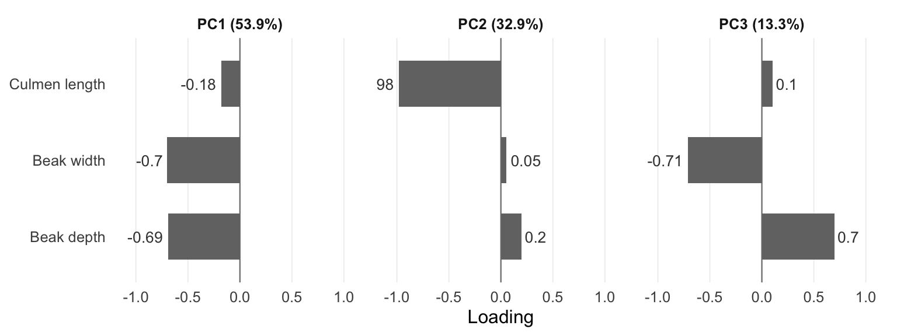
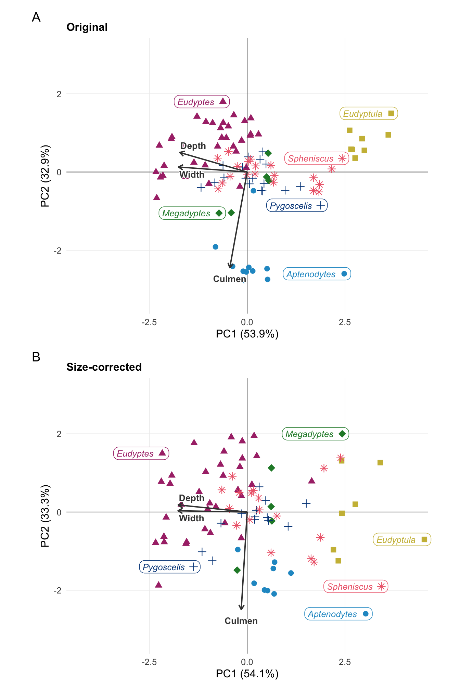

| Genus | Penguins | Culmen length | Nares length | Beak width | Beak depth | Tarsus length | Hand-wing index | Unknown sex |
|---|---|---|---|---|---|---|---|---|
| Aptenodytes | 10 | 0 | 1 | 0 | 0 | 2 | 2 | 1 |
| Eudyptes | 36 | 0 | 3 | 0 | 1 | 0 | 7 | 15 |
| Eudyptula | 7 | 0 | 3 | 0 | 0 | 1 | 3 | 7 |
| Megadyptes | 4 | 0 | 0 | 0 | 0 | 0 | 0 | 2 |
| Pygoscelis | 17 | 0 | 5 | 0 | 0 | 4 | 5 | 0 |
| Spheniscus | 19 | 0 | 3 | 0 | 0 | 2 | 3 | 17 |
Beaks and Flippers
How Beak Shape and Wing Structure Vary Across Penguin Genera
Introduction
Brief introduction to the dataset. You may repeat some of the information about the dataset provided in the introduction to the dataset on the TidyTuesday repository, paraphrasing on your own terms. Imagine that your project is a standalone document and the grader has no prior knowledge of the dataset.
Question 1: Do penguin genera differ in beak shape?
Introduction
(1-2 paragraphs): Introduction to the question and what parts of the dataset are necessary to answer the question. Also discuss why you’re interested in this question.
Approach
(1-2 paragraphs): Describe what types of plots you are going to make to address your question. For each plot, provide a clear explanation as to why this plot (e.g. boxplot, barplot, histogram, etc.) is best for providing the information you are asking about. The two plots should be of different types, and at least one of the two plots needs to use either color mapping or facets.
- Figure 1: bar chart of PCA loadings, to show which beak measurement contributes most to each PC.
- Figure 2: PCA biplot (scatterplot of PC scores, coloured by genus, with loading arrows), faceted into original and size-corrected PCA.
Also to mention: log-transform and scale; complete cases or imputation; size correction using residuals on tarsus length.
Analysis
Before running the PCA, we explored missing values in the four beak measurements (Table 1). While culmen length and beak width were complete, beak depth was missing for 1 penguin, and nares length was missing for 15 penguins, with the highest proportions in Eudyptula (3 of 7) and Pygoscelis (5 of 17). Because nares length was strongly correlated with culmen length (r = 0.85), which also measures beak length, we excluded this measure to avoid losing these penguins. We considered imputing their values, but imputation would add little new information and could make genera appear more distinct than they are. Therefore, we ran the PCA on culmen length, beak width and beak depth, using only penguins with all three measurements (complete cases, n = 92).
For the size-corrected PCA, we used only penguins with all three beak measurements and tarsus length (n = 83), compared with 92 penguins in the original PCA, because tarsus length is also missing for some individuals.
| PC1 | PC2 | PC3 | |
|---|---|---|---|
| Standard deviation | 1.27 | 0.99 | 0.63 |
| Proportion of Variance | 0.54 | 0.33 | 0.13 |
| Cumulative Proportion | 0.54 | 0.87 | 1.00 |
We observed that, together, PC1 and PC2 explained the 86.75% of the total varation (PC1: 53.86%; PC2: 32.89%). PC3 explained the remaining: 13.253% (Table 2).

The loadings show that each principal component mainly reflects a different dimension of the beak (Figure 1). PC1 is dominated by beak width (-0.7) and beak depth (-0.69), with a small contribution from culmen length, so it mainly represents how wide and deep (thick) the beak is. PC2 is almost entirely determined by culmen length (-0.98) and therefore represents beak length. PC3 contrasts beak width and depth, which load with opposite signs, separating beaks that are deep relative to their width from beaks that are wide relative to their depth. Because the signs of loadings in a PCA are arbitrary, what matters is which measurements load strongly together and whether they share the same or opposite signs.

Some genera form distinct groups in the biplot (Figure 2). Aptenodytes separates along the culmen length arrow, indicating longer beaks, while Eudyptula lies opposite the width and depth arrows (narrower, shallower beaks). Eudyptes lies along width and depth arrows direction (wider, deeper beaks). Pygoscelis, Spheniscus and Megadyptes overlap in the centre. Because this PCA was not corrected for size, the extreme positions of the largest (Aptenodytes) and smallest (Eudyptula) penguins may partly reflect body size.
Discussion
Our PCA showed that penguin beak variation is organised along two largely independent dimensions: beak thickness (width and depth, PC1) and beak length (PC2), which together explained 86.7% of the variation. Although we expected that PC1 would reflect overall beak size, culmen length contributed little to PC1. This means that penguins with thicker beaks do not necessarily have longer beaks. This suggests that beak length and thickness may have evolved somewhat independently across penguins, possibly in relation to different feeding demands, although our data cannot test this directly. Because we used only three beak measurements, a simple scatterplot of beak length against depth would show a similar pattern, but the PCA confirmed that width and depth vary together while length varies independently.
Question 2: Does the hand-wing index still vary among penguin genera?
Introduction
Approach
- Figure 3: boxplot of the hand-wing index by genus, with individual penguins as jittered points coloured by genus and the sample size (n) for each genus.
- Figure 4: mean hand-wing index per genus with 95% confidence intervals (point-and-interval plot), to judge whether genera are similar.
Also mention what test we chose, ANOVA or Kruskal-Wallis, and the effect size as support.
Analysis
Discussion
References
AI Disclosure
Maria Sans-Fuentes: Claude (Anthropic) was used to:
- choose a colour-blind-friendly palette for our figures (it suggested a palette adapted from Paul Tol’s colour schemes, with darkened blues so all colours are clearly visible, one colour per genus, and a different point shape per genus as a second cue);
- debug R code, for example how to print the variance explained from a PCA summary with
kable()(usingsummary(pca)$importance) and why missing colour values removed all points from a ggplot;
Andrew King: (state tool and use, or “No AI tools were used.”)
Stephanie Wu: (state tool and use, or “No AI tools were used.”)